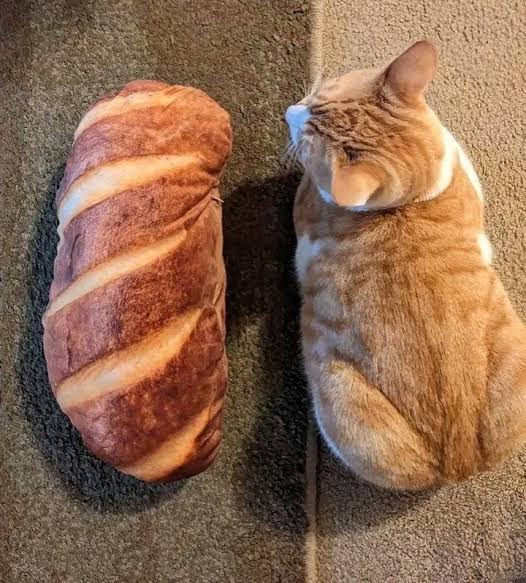
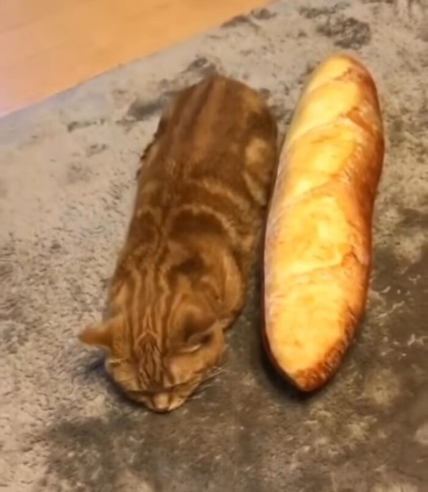
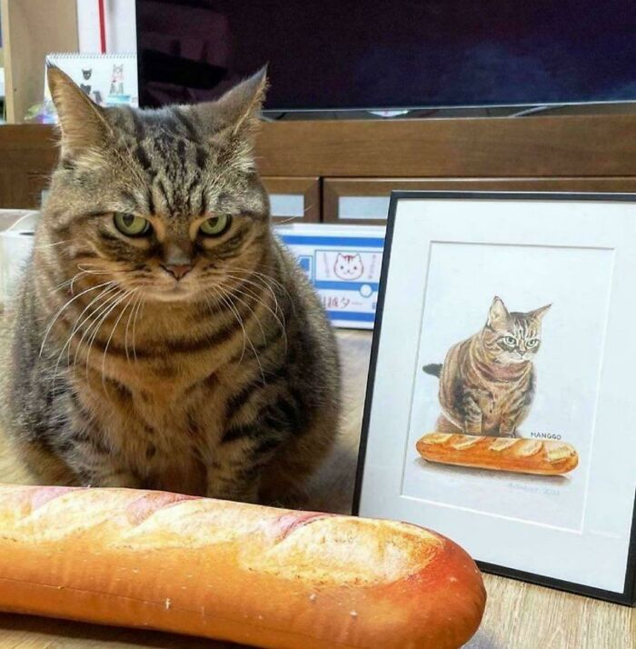

After months of intense meditation and zero cardio, he achieved aerodynamic perfection. Ears tucked, paws hidden, spine elongated. Even professional French bakers have accidentally tried to butter him twice. Stealth level: 100% Gluten.

Born in a local bakery, Sir Whiskers spent his early years questioning his own existence. Every morning he stared at the plush baguette, wondering: "Am I made of dough, or is the bread made of cat?" His posture soon began to mimic the sacred loaf.

Now a certified art collector and guardian of the Ancient Baguette. He commissioned a royal portrait of himself with his beloved carbs and judges anyone who enters the room without snacks. Touch the bread, and you lose a finger.